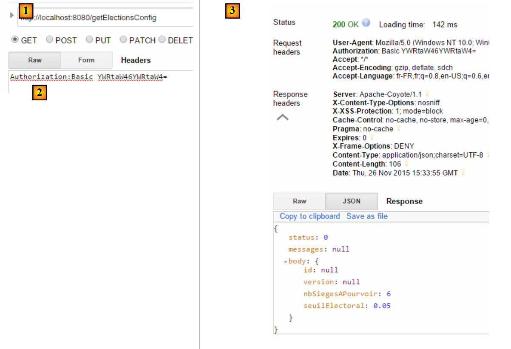
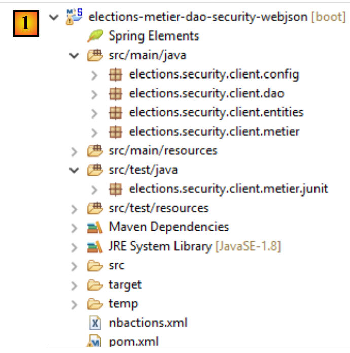
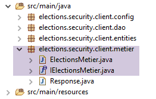
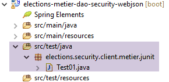
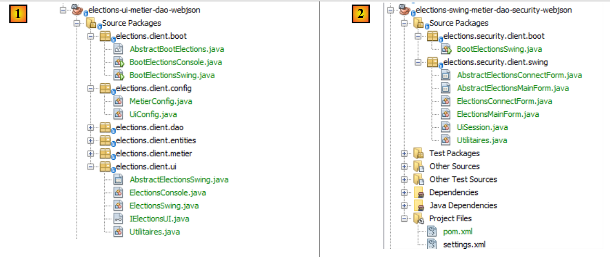
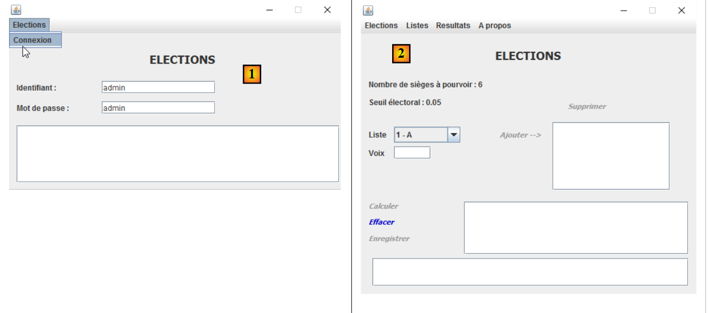
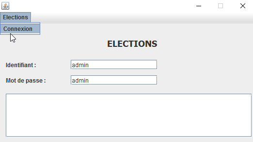
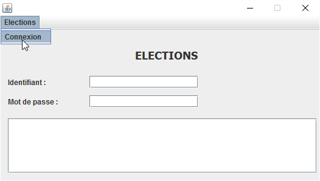

17. [TD] : sécurisation du serveur web / jSON des élections
Mots clés : architecture multicouche, Spring, injection de dépendances, service web / jSON sécurisé, client / serveur
Nous appliquons maintenant ce que nous avons appris dans le chapitre précédent au TD des élections. L'architecture sera la suivante :
 |
La progession se fera de la façon suivante :
- écriture du serveur ;
- écriture du client sans couche [ui] mais avec un test JUnit de la couche [métier] ;
- écriture du client avec la couche [ui] ;
17.1. Support
 |  |
Les projets de ce chapitre seront trouvés dans le dossier [support / chap-17]. Le script SQL sert à générer la base de données nécessaire aux tests.
17.2. La base de données
La base de données du serveur sécurisé doit maintenant comporter les tables [USERS], [ROLES] et [USERS_ROLES] :
 |  |
Le script SQL de la génération de la base est disponible dans le support du document.
17.3. Le serveur sécurisé
Pour mettre en place le serveur sécurisé des élections, nous nous contentons de faire un copy / paste du projet exemple [intro-spring-security-server-01] :
 |
Travail à faire : renommez les packages comme montré en [1].
Ceci fait, nous modifions le fichier [pom.xml] de la façon suivante :
<project xmlns="http://maven.apache.org/POM/4.0.0" xmlns:xsi="http://www.w3.org/2001/XMLSchema-instance"
xsi:schemaLocation="http://maven.apache.org/POM/4.0.0 http://maven.apache.org/xsd/maven-4.0.0.xsd">
<modelVersion>4.0.0</modelVersion>
<groupId>istia.st.elections</groupId>
<artifactId>elections-security-webjson-metier-dao-spring-data</artifactId>
<version>0.0.1-SNAPSHOT</version>
<name>elections-security-webjson-metier-dao-spring-data</name>
<description>elections spring security</description>
<properties>
<project.build.sourceEncoding>UTF-8</project.build.sourceEncoding>
<java.version>1.8</java.version>
</properties>
<parent>
<groupId>org.springframework.boot</groupId>
<artifactId>spring-boot-starter-parent</artifactId>
<version>1.2.7.RELEASE</version>
</parent>
<dependencies>
<dependency>
<groupId>istia.st.elections</groupId>
<artifactId>elections-webjson-metier-dao-spring-data</artifactId>
<version>0.0.1-SNAPSHOT</version>
</dependency>
<!-- Spring security -->
...
</dependencies>
<!-- plugins -->
<build>
...
</build>
</project>
- aux lignes 23-27, remplacez la dépendance sur le projet [intro-server-webjson-01] par celle sur le projet [elections-webjson-metier-dao-spring-data] étudié au paragraphe 12 ;
- aux lignes 4-7, mettre les caractéristiques du nouveau projet ;
Il nous reste à modifier les classes de configuration du projet :
[DaoConfig]
package elections.security.config;
import org.springframework.context.annotation.Bean;
import org.springframework.context.annotation.ComponentScan;
import org.springframework.context.annotation.Import;
import org.springframework.data.jpa.repository.config.EnableJpaRepositories;
@EnableJpaRepositories(basePackages = { "elections.security.repositories" })
@ComponentScan(basePackages = { "elections.security.dao" })
@Import({ elections.dao.config.DaoConfig.class })
public class DaoConfig {
// constantes
final static private String[] ENTITIES_PACKAGES = { "elections.dao.entities", "elections.security.entities" };
@Bean
public String[] packagesToScan() {
return ENTITIES_PACKAGES;
}
}
Les modifications sont aux lignes suivantes :
- lignes 8, 9, 14 : mettre les bons noms de packages ;
- ligne 10 : la classe importée est maintenant [elections.dao.config.DaoConfig] du projet [elections-webjson-metier-dao-spring-data] ;
Note : comme il a été dit, cette configuration ne marche que si la classe [elections.dao.config.DaoConfig] a l'annotation [@Configuration]. Vérifiez ce point.
[SecurityConfig]
package elections.security.config;
...
@EnableWebSecurity
@ComponentScan(basePackages = { "elections.security.service" })
@Import({ WebConfig.class, DaoConfig.class })
public class SecurityConfig extends WebSecurityConfigurerAdapter {
...
}
Les modifications sont aux lignes suivantes :
- ligne 6 : changez le nom du package ;
C'est tout. Faites un premier test en exécutant le test JUnit [] :
 |
Exécutez la classe de boot [Boot] puis avec l'extension Chrome [Advanced Rest Client] faites le test suivant :
 |
En [1], la demande. En [3], la réponse. En [2], l'entête HTTP est l'entête d'authentification de l'utilisateur [admin, admin] : Authorization:Basic YWRtaW46YWRtaW4=
Demandez maintenant, les listes en compétition :
 |
17.4. Le client du serveur sécurisé sans la couche [ui]
 |
Faites un copy / paste du projet [elections-ui-metier-dao-webjson] dans le projet [elections-metier-dao-security-webjson].
 |
Travail à faire : en [1], renommez les packages si nécessaire et supprimez ceux de la couche [ui] et des classes de démarrage [boot].
Nous allons procéder maintenant comme il a été fait au paragraphe 16.5.
17.4.1. Configuration Maven
Seule la partie identification du projet change :
<project xmlns="http://maven.apache.org/POM/4.0.0" xmlns:xsi="http://www.w3.org/2001/XMLSchema-instance"
xsi:schemaLocation="http://maven.apache.org/POM/4.0.0 http://maven.apache.org/xsd/maven-4.0.0.xsd">
<modelVersion>4.0.0</modelVersion>
<groupId>istia.st.elections</groupId>
<artifactId>elections-metier-dao-security-webjson</artifactId>
<version>0.0.1-SNAPSHOT</version>
<description>Client jUnit du serveur web / jSON</description>
<name>elections-metier-dao-security-webjson</name>
...
17.4.2. Refactorisation de la couche [métier]
 |
L'interface [IElectionsMetier] évolue de la façon suivante :
package elections.security.client.metier;
import elections.security.client.entities.ListeElectorale;
import elections.security.client.entities.User;
public interface IElectionsMetier {
// authentification
public void authenticate(User user);
// obtenir les listes en compétition
public ListeElectorale[] getListesElectorales(User user);
// le nombre de sièges à pourvoir
public int getNbSiegesAPourvoir(User user);
// le seuil électoral
public double getSeuilElectoral(User user);
// l'enregistrement des résultats
public void recordResultats(User user, ListeElectorale[] listesElectorales);
// le calcul des sièges
public ListeElectorale[] calculerSieges(User user, ListeElectorale[] listesElectorales);
}
Toutes les méthodes ont pour premier paramètre, l'utilisateur qui veut utiliser les ressources du serveur sécurisé.
L'implémentation [ElectionsMetier] évolue de la façon suivante :
package elections.security.client.metier;
import java.io.IOException;
import org.springframework.beans.factory.annotation.Autowired;
import org.springframework.context.ApplicationContext;
import org.springframework.stereotype.Component;
import com.fasterxml.jackson.core.type.TypeReference;
import com.fasterxml.jackson.databind.ObjectMapper;
import elections.security.client.dao.IClientDao;
import elections.security.client.entities.ElectionsConfig;
import elections.security.client.entities.ElectionsException;
import elections.security.client.entities.ListeElectorale;
import elections.security.client.entities.User;
@Component
public class ElectionsMetier implements IElectionsMetier {
@Autowired
private IClientDao dao;
@Autowired
private ApplicationContext context;
// configuration de l'élection
private ElectionsConfig electionsConfig;
private ElectionsConfig getElectionsConfig(User user) {
if(electionsConfig!=null){
return electionsConfig;
}
// mappeurs jSON
ObjectMapper mapperResponse = context.getBean(ObjectMapper.class);
try {
// requête
Response<ElectionsConfig> response = mapperResponse.readValue(dao.getResponse(user, "/getElectionsConfig", null),
new TypeReference<Response<ElectionsConfig>>() {
});
// erreur ?
if (response.getStatus() != 0) {
// on lance 1 exception
throw new ElectionsException(response.getStatus(), response.getMessages());
} else {
electionsConfig = response.getBody();
return electionsConfig;
}
} catch (ElectionsException e1) {
throw e1;
} catch (IOException | RuntimeException e2) {
throw new ElectionsException(100, e2);
}
}
@Override
public ListeElectorale[] getListesElectorales(User user) {
...
}
@Override
public int getNbSiegesAPourvoir(User user) {
return getElectionsConfig(user).getNbSiegesAPourvoir();
}
@Override
public double getSeuilElectoral(User user) {
return getElectionsConfig(user).getSeuilElectoral();
}
@Override
public void recordResultats(User user, ListeElectorale[] listesElectorales) {
...
}
@Override
public ListeElectorale[] calculerSieges(User user, ListeElectorale[] listesElectorales) {
...
}
@Override
public void authenticate(User user) {
dao.getResponse(user, "/authenticate", null);
}
}
Travail à faire : complétez le code ci-dessus.
17.4.3. Configuration Spring
 |
La classe [MetierConfig] évolue comme suit :
package elections.security.client.config;
...
@ComponentScan({ "elections.security.client.dao", "elections.security.client.metier" })
public class MetierConfig {
Ligne 5, les packages à explorer doivent être mis à jour.
17.4.4. Le test JUnit de la couche [métier]
 |
La classe de test [Test01] évolue de la façon suivante :
package elections.security.client.metier.junit;
import org.junit.Assert;
import org.junit.BeforeClass;
import org.junit.Test;
import org.junit.runner.RunWith;
import org.springframework.beans.factory.annotation.Autowired;
import org.springframework.boot.test.SpringApplicationConfiguration;
import org.springframework.test.context.junit4.SpringJUnit4ClassRunner;
import com.fasterxml.jackson.core.JsonProcessingException;
import com.fasterxml.jackson.databind.ObjectMapper;
import elections.security.client.config.MetierConfig;
import elections.security.client.entities.ElectionsException;
import elections.security.client.entities.ListeElectorale;
import elections.security.client.entities.User;
import elections.security.client.metier.IElectionsMetier;
@SpringApplicationConfiguration(classes = MetierConfig.class)
@RunWith(SpringJUnit4ClassRunner.class)
public class Test01 {
// couche [electionsMetier]
@Autowired
private IElectionsMetier electionsMetier;
// mappeur jSON
private final ObjectMapper mapper = new ObjectMapper();
// utilisateurs
static private User admin;
static private User user;
static private User unknown;
@BeforeClass
public static void initTest() {
admin = new User("admin", "admin");
user = new User("user", "user");
unknown = new User("x", "y");
}
@Test()
public void checkUserUser() {
ElectionsException se = null;
try {
electionsMetier.authenticate(user);
} catch (ElectionsException e) {
se = e;
}
Assert.assertNotNull(se);
Assert.assertEquals("403 Forbidden", se.getErreurs().get(0));
}
@Test()
public void checkUserUnknown() {
ElectionsException se = null;
try {
electionsMetier.authenticate(unknown);
} catch (ElectionsException e) {
se = e;
}
Assert.assertNotNull(se);
Assert.assertEquals("401 Unauthorized", se.getErreurs().get(0));
}
@Test()
public void checkUserAdmin() {
ElectionsException se = null;
try {
electionsMetier.authenticate(admin);
} catch (ElectionsException e) {
se = e;
}
Assert.assertNull(se);
}
/**
* vérification 1 : méthode de calcul des sièges on fixe en dur les listes
*/
@Test
public void calculSieges1() {
// on crée le tableau des 7 listes candidates
ListeElectorale[] listes = new ListeElectorale[7];
listes[0] = new ListeElectorale("A", 32000, 0, false);
listes[1] = new ListeElectorale("B", 25000, 0, false);
listes[2] = new ListeElectorale("C", 16000, 0, false);
listes[3] = new ListeElectorale("D", 12000, 0, false);
listes[4] = new ListeElectorale("E", 8000, 0, false);
listes[5] = new ListeElectorale("F", 4500, 0, false);
listes[6] = new ListeElectorale("G", 2500, 0, false);
// on calcule les sièges de chacune des listes
listes = electionsMetier.calculerSieges(admin,listes);
// on vérifie les résultats
Assert.assertEquals(2, listes[0].getSieges());
Assert.assertFalse(listes[0].isElimine());
Assert.assertEquals(2, listes[1].getSieges());
Assert.assertFalse(listes[1].isElimine());
Assert.assertEquals(1, listes[2].getSieges());
Assert.assertFalse(listes[2].isElimine());
Assert.assertEquals(1, listes[3].getSieges());
Assert.assertFalse(listes[3].isElimine());
Assert.assertEquals(0, listes[4].getSieges());
Assert.assertFalse(listes[4].isElimine());
Assert.assertEquals(0, listes[5].getSieges());
Assert.assertTrue(listes[5].isElimine());
Assert.assertEquals(0, listes[6].getSieges());
Assert.assertTrue(listes[6].isElimine());
}
/**
* vérification 2 : méthode de calcul des sièges on demande les listes à la couche [metier] puis on fixe en dur les
* voix
*/
@Test
public void calculSieges2() {
// on crée le tableau des 7 listes candidates
ListeElectorale[] listes = electionsMetier.getListesElectorales(admin);
// on fixe en dur les voix
listes[0].setVoix(32000);
listes[1].setVoix(25000);
listes[2].setVoix(16000);
listes[3].setVoix(12000);
listes[4].setVoix(8000);
listes[5].setVoix(4500);
listes[6].setVoix(2500);
// on calcule les sièges obtenus par chacune des listes
listes = electionsMetier.calculerSieges(admin,listes);
// on vérifie les résultats
Assert.assertEquals(2, listes[0].getSieges());
Assert.assertFalse(listes[0].isElimine());
Assert.assertEquals(2, listes[1].getSieges());
Assert.assertFalse(listes[1].isElimine());
Assert.assertEquals(1, listes[2].getSieges());
Assert.assertFalse(listes[2].isElimine());
Assert.assertEquals(1, listes[3].getSieges());
Assert.assertFalse(listes[3].isElimine());
Assert.assertEquals(0, listes[4].getSieges());
Assert.assertFalse(listes[4].isElimine());
Assert.assertEquals(0, listes[5].getSieges());
Assert.assertTrue(listes[5].isElimine());
Assert.assertEquals(0, listes[6].getSieges());
Assert.assertTrue(listes[6].isElimine());
}
/**
* vérification 3 méthode de calcul des sièges on provoque une exception
*/
@Test(expected = ElectionsException.class)
public void calculSieges3() {
// on crée un tableau de 24 listes candidates avec chacune 1 voix
ListeElectorale[] listes = new ListeElectorale[25];
// les 25 listes auront le même nombre de voix (4%)
for (int i = 0; i < listes.length; i++) {
listes[i] = new ListeElectorale("Liste" + (i + 1), 1, 0, false);
}
// calcul des sièges - normalement on doit avoir une ElectionsException
// avec un seuil èlectoral de 5%
electionsMetier.calculerSieges(admin,listes);
}
/**
* enregistrement des résultats de l'élection
*
* @throws JsonProcessingException
*/
@Test
public void ecritureResultatsElections() throws JsonProcessingException {
// on crée le tableau des 7 listes candidates
ListeElectorale[] listes = electionsMetier.getListesElectorales(admin);
// on fixe en dur les voix
listes[0].setVoix(32000);
listes[1].setVoix(25000);
listes[2].setVoix(16000);
listes[3].setVoix(12000);
listes[4].setVoix(8000);
listes[5].setVoix(4500);
listes[6].setVoix(2500);
// on calcule les sièges obtenus par chacune des listes
listes = electionsMetier.calculerSieges(admin,listes);
// on affiche les résultats
for (int i = 0; i < listes.length; i++) {
System.out.println(mapper.writeValueAsString(listes[i]));
}
// on enregistre les résultats dans la base de données
electionsMetier.recordResultats(admin,listes);
// on vérifie les résultats
listes = electionsMetier.getListesElectorales(admin);
// on affiche les résultats
for (int i = 0; i < listes.length; i++) {
System.out.println(mapper.writeValueAsString(listes[i]));
}
Assert.assertEquals(2, listes[0].getSieges());
Assert.assertFalse(listes[0].isElimine());
Assert.assertEquals(2, listes[1].getSieges());
Assert.assertFalse(listes[1].isElimine());
Assert.assertEquals(1, listes[2].getSieges());
Assert.assertFalse(listes[2].isElimine());
Assert.assertEquals(1, listes[3].getSieges());
Assert.assertFalse(listes[3].isElimine());
Assert.assertEquals(0, listes[4].getSieges());
Assert.assertFalse(listes[4].isElimine());
Assert.assertEquals(0, listes[5].getSieges());
Assert.assertTrue(listes[5].isElimine());
Assert.assertEquals(0, listes[6].getSieges());
Assert.assertTrue(listes[6].isElimine());
}
}
Travail à faire : comprenez ce test et vérifiez qu'il passe.
17.5. Le client du serveur sécurisé avec une couche [console]
 |
Avec Netbeans, nous ouvrons les projets Maven [elections-metier-dao-security-webjson] et [elections-ui-metier-dao-webjson] puis nous construisons un nouveau projet [elections-console-metier-dao-security-webjson] par un copy / paste du projet [elections-ui-metier-dao-webjson] :
 |
La plupart des classes du nouveau projet [3] proviennent du projet [elections-ui-metier-dao-webjson] [2] qui était le client du serveur web / jSON non sécurisé :
 |
Procédez ainsi pour construire le nouveau projet Maven :
- faites un copy / paste du projet [elections-ui-metier-dao-webjson] dans le projet [elections-ui-metier-dao-security-webjson] ;
- dans le nouveau projet :
- supprimez les packages [elections.client.dao, elections.client.metier, elections.client.entities] ;
- dans le package [elections.client.ui], gardez seulement la classe console [ElectionsConsole] et son interface [IElectionsUI] ;
- renommez les packages comme indiqué en [3] ;
- réglez les problèmes d'import dans les diverses classes par [clic droit / Fix Imports] ;
A ce stade, le nouveau projet présente de nombreuses erreurs.
17.5.1. Configuration Maven
Le fichier [pom.xml] du nouveau projet est le suivant :
<project xmlns="http://maven.apache.org/POM/4.0.0" xmlns:xsi="http://www.w3.org/2001/XMLSchema-instance"
xsi:schemaLocation="http://maven.apache.org/POM/4.0.0 http://maven.apache.org/xsd/maven-4.0.0.xsd">
<modelVersion>4.0.0</modelVersion>
<groupId>istia.st.elections</groupId>
<artifactId>elections-console-metier-dao-security-webjson</artifactId>
<version>0.0.1-SNAPSHOT</version>
<name>elections-console-metier-dao-security-webjson</name>
<description>couche console du client web / jSON</description>
<properties>
<project.build.sourceEncoding>UTF-8</project.build.sourceEncoding>
<java.version>1.8</java.version>
</properties>
<parent>
<groupId>org.springframework.boot</groupId>
<artifactId>spring-boot-starter-parent</artifactId>
<version>1.2.7.RELEASE</version>
</parent>
<dependencies>
<dependency>
<groupId>istia.st.elections</groupId>
<artifactId>elections-metier-dao-security-webjson</artifactId>
<version>0.0.1-SNAPSHOT</version>
</dependency>
</dependencies>
<build>
<plugins>
<plugin>
<groupId>org.apache.maven.plugins</groupId>
<artifactId>maven-surefire-plugin</artifactId>
<version>2.18.1</version>
</plugin>
</plugins>
</build>
</project>
- lignes 4-8 : l'identité Maven du nouveau projet ;
- lignes 22-26 : la dépendance sur le projet [elections-metier-dao-security-webjson] que nous venons de construire au paragraphe 17.4, et qui fournit les couches [DAO] et [métier] ;
17.5.2. Configuration Spring
 |
La classe [UiConfig] est la suivante :
package elections.security.client.config;
import elections.security.client.entities.User;
import org.springframework.context.annotation.Bean;
import org.springframework.context.annotation.ComponentScan;
import org.springframework.context.annotation.Import;
@Import(MetierConfig.class)
@ComponentScan(basePackages = {"elections.security.client.console","elections.security.client.swing"})
public class UiConfig {
// administrateur
private final User ADMIN = new User("admin", "admin");
@Bean
private User admin() {
return ADMIN;
}
}
- ligne 8 : on importe la classe [elections.security.client.config.MetierConfig] du projet [elections-metier-dao-security-webjson] étudié au paragraphe 17.4 ;
- ligne 9 : on déclare les packages où se trouvent les beans Spring ;
- lignes 12-18 : le bean [admin] est l'utilisateur [admin, admin] qui sera utilisé par l'application console. On se rappelle que c'est le seul utilisateur autorisé à interroger el serveur web / jSON sécurisé ;
17.5.3. L'application de boot de la console
 |
La classe [ElectionsConsole] évolue de la façon suivante :
package elections.security.client.console;
import java.util.Arrays;
import java.util.Comparator;
import java.util.Scanner;
import org.springframework.beans.factory.annotation.Autowired;
import org.springframework.stereotype.Component;
import elections.security.client.entities.ElectionsException;
import elections.security.client.entities.ListeElectorale;
import elections.security.client.entities.User;
import elections.security.client.metier.IElectionsMetier;
@Component
public class ElectionsConsole implements IElectionsUI {
@Autowired
private IElectionsMetier electionsMetier;
@Autowired
private User admin;
@Override
public void run() {
// les listes en compétition
ListeElectorale[] listes;
// saisie des données
try (Scanner clavier = new Scanner(System.in)) {
// on demande les listes en compétition à la couche [metier]
listes = electionsMetier.getListesElectorales(admin);
// on fait la saisie des voix
System.out.println("Il y a " + listes.length
+ " listes en compétition. Veuillez indiquer le nombre de voix de chacune d'elles :");
for (int i = 0; i < listes.length; i++) {
boolean saisieOK = false;
while (!saisieOK) {
System.out.print("Nombre de voix de la liste [" + listes[i].getNom() + "] : ");
try {
listes[i].setVoix(Integer.parseInt(clavier.nextLine()));
saisieOK = true;
} catch (ElectionsException | NumberFormatException ex) {
System.out.println("Nombre de voix incorrect. Veuillez recommencer");
}
}
}
}
// on fait le calcul des sièges
listes=electionsMetier.calculerSieges(admin,listes);
// on enregistre les résultats
electionsMetier.recordResultats(admin,listes);
// tri des listes dans l'ordre décroissant des voix
Arrays.sort(listes, new CompareListesElectorales());
// on les affiche
System.out.println("\nRésultats de l'élection\n");
for (int i = 0; i < listes.length; i++) {
System.out.println(listes[i]);
}
}
// classe de comparaison de listes électorales
class CompareListesElectorales implements Comparator<ListeElectorale> {
// comparaison de deux listes candidates selon le nombre de voix
@Override
public int compare(ListeElectorale listeElectorale1, ListeElectorale listeElectorale2) {
// on compare les voix de ces deux listes
int nbVoix1 = listeElectorale1.getVoix();
int nbVoix2 = listeElectorale2.getVoix();
if (nbVoix1 < nbVoix2) {
return +1;
} else {
if (nbVoix1 > nbVoix2)
return -1;
else
return 0;
}
}
}
}
La classe ElectionsConsole bouge très peu. Il faut simplement se rappeler que maintenant les méthodes de la couche [métier] réclament comme premier paramètre, un utilisateur (lignes 31, 49, 51). Celui-ci est fourni par l'injection des lignes 21-22. L'utilisateur injecté est celui autorisé à interroger le serveur web / jSON.
Travail à faire : testez l'application console (pensez à lancer auparavant le serveur sécurisé).
17.6. Le client du serveur sécurisé avec une couche [swing]
 |
Nous créons un nouveau projet Netbeans [elections-swing-metier-dao-security-webjson] par un copy / paste du projet [elections-ui-metier-dao-webjson] :
 |
Dans le nouveau projet [2] :
- supprimez les packages [elections.client.dao, elections.client.metier, elections.client.entities] ;
- dans le package [elections.client.ui], supprimez les classes [ElectionsConsole, IElectionsUI] ;
- renommez les packages comme indiqué en [2] ;
- dans le package [elections.security.client.swing], renommez la classe [AbstractElectionsSwing] qui implémente l'interface graphique en [AbstractElectionsMainForm] et la classe [ElectionsSwing] qui implémente les gestionnaires des événements de l'interface graphque en [ElectionsMainForm] ;
- réglez les problèmes d'import dans les diverses classes par [clic droit / Fix Imports] ;
A ce stade, il y a de nombreuses erreurs.
17.6.1. Configuration Maven
Le fichier [pom.xml] évolue de la façon suivante :
<project xmlns="http://maven.apache.org/POM/4.0.0" xmlns:xsi="http://www.w3.org/2001/XMLSchema-instance"
xsi:schemaLocation="http://maven.apache.org/POM/4.0.0 http://maven.apache.org/xsd/maven-4.0.0.xsd">
<modelVersion>4.0.0</modelVersion>
<groupId>istia.st.elections</groupId>
<artifactId>elections-swing-metier-dao-security-webjson</artifactId>
<version>0.0.1-SNAPSHOT</version>
<name>elections-swing-metier-dao-security-webjson</name>
<description>couche swing du client web / jSON</description>
<properties>
<project.build.sourceEncoding>UTF-8</project.build.sourceEncoding>
<java.version>1.8</java.version>
</properties>
<parent>
<groupId>org.springframework.boot</groupId>
<artifactId>spring-boot-starter-parent</artifactId>
<version>1.2.7.RELEASE</version>
</parent>
<dependencies>
<dependency>
<groupId>istia.st.elections</groupId>
<artifactId>elections-console-metier-dao-security-webjson</artifactId>
<version>0.0.1-SNAPSHOT</version>
</dependency>
</dependencies>
<build>
<plugins>
<plugin>
<groupId>org.apache.maven.plugins</groupId>
<artifactId>maven-surefire-plugin</artifactId>
<version>2.18.1</version>
</plugin>
</plugins>
</build>
</project>
- lignes 4-8 : l'identité Maven du nouveau projet ;
- lignes 22-26 : une dépendance sur le projet console que nous venons d'étudier au paragraphe 17.5 ;
17.6.2. Configuration Spring
Ce projet utilise la configuration Spring du projet console qu'il importe (cf paragraphe 17.5.2).
17.6.3. Les vues de l'application Swing
 |
Ce projet va utiliser deux vues :
 |
- la vue [1] de connexion est nouvelle. Elle sert à authentifier l'utilisateur qui veut utiliser l'application. Elle utilise les classes :
- [AbstractElectionsConnectForm] qui implémente la vue ;
- [ElectionsConnectForm] qui gère les événements de la vue ;
- la vue [2] est connue. C'est celle utilisée jusqu'à maintenant. Elle utilise les classes :
- [AbstractElectionsMainForm] qui implémente la vue ;
- [ElectionsMainForm] qui gère les événements de la vue ;
17.6.4. La session
 |
Lorsqu'une application Swing a plusieurs vues, il faut trouver un moyen pour qu'une vue puisse passer de l'information à une autre vue. Nous utilisons un concept utilisé en développement web : la session qui permet aux vues associées à un utilisateur précis de partager de l'information. Ce concept sera implémenté ici à l'aide d'un singleton Spring qui sera injecté dans les deux classes qui gèrent les événements des deux vues :
package elections.security.client.swing;
import elections.security.client.entities.User;
import org.springframework.stereotype.Component;
@Component
public class UiSession {
// l'utilisateur connecté
private User user;
// getters et setters
...
}
- ligne 6 : la classe [UiSession] est un composant Spring ;
- ligne 10 : elle ne sert qu'à une chose : mémoriser l'utilisateur qui se connecte avec la vue [1]. La vue [2] qui a besoin de connaître celui-ci ira le chercher là ;
17.6.5. La classe de boot
 |
La classe de boot de l'application graphique est la suivante :
package elections.security.client.boot;
import elections.security.client.console.IElectionsUI;
public class BootElectionsSwing extends AbstractBootElections {
public static void main(String[] arguments) {
new BootElectionsSwing().run();
}
@Override
protected IElectionsUI getUI() {
return ctx.getBean("electionsConnectForm", IElectionsUI.class);
}
}
- ligne 5 : la classe [BootElectionsSwing] étend la classe [AbstractBootElections] définit dans le projet console présent dans les dépendances du projet ;
- lignes 10-13 : la classe [BootElectionsSwing] fera afficher la vue de connexion [ElectionsConnectForm] ;
- lignes 6-8 : c'est la méthode [run] de cette classe qui sera exécutée ;
17.6.6. La classe [ElectionsMainForm]
La classe [ElectionsMainForm] est celle qui s'appelait auparavant [ElectionsSwing]. Elle gère les événements de la vue [AbstractElectionsMainForm]. Son code évolue de la façon suivante :
package elections.security.client.swing;
import elections.security.client.console.IElectionsUI;
import java.awt.Dimension;
import java.awt.Toolkit;
import java.util.ArrayList;
import java.util.List;
import javax.swing.DefaultListModel;
import javax.swing.JLabel;
import javax.swing.JMenuItem;
import javax.swing.JOptionPane;
import org.springframework.beans.factory.annotation.Autowired;
import org.springframework.stereotype.Component;
import elections.security.client.entities.ElectionsException;
import elections.security.client.entities.ListeElectorale;
import elections.security.client.entities.User;
import elections.security.client.metier.IElectionsMetier;
@Component
public class ElectionsMainForm extends AbstractElectionsMainForm implements IElectionsUI {
private static final long serialVersionUID = 1L;
// référence sur la couche [métier]
@Autowired
private IElectionsMetier metier;
// session UI
@Autowired
private UiSession uiSession;
// utilisateur connecté
private User user;
// modèles des listes JList
private DefaultListModel<String> modèleNomsVoix = null;
private DefaultListModel<String> modèleRésultats = null;
// les listes en compétition
private ListeElectorale[] listes;
// listes saisies par l'utilisateur
private final List<ListeElectorale> listesSaisies = new ArrayList<>();
private ListeElectorale[] tListesSaisies;
// initialisations
@Override
protected void init() {
// génération des composants par la classe parent
super.init();
// initialisations locales
modèleNomsVoix = new DefaultListModel<>();
jListNomsVoix.setModel(modèleNomsVoix);
modèleRésultats = new DefaultListModel<>();
jListResultats.setModel(modèleRésultats);
String info;
boolean erreur = false;
try {
// on demande les listes à la couche [métier]
listes = metier.getListesElectorales(user);
// on associe les noms des listes au combo jComboBoxNomsListes
for (int i = 0; i < listes.length; i++) {
jComboBoxNomsListes.addItem(String.format("%s - %s", listes[i].getId(), listes[i].getNom()));
}
// ainsi que les paramètres de l'élection
int nbSiegesAPourvoir = metier.getNbSiegesAPourvoir(user);
double seuilElectoral = metier.getSeuilElectoral(user);
// on initialise les labels liés à ces deux informations
jLabelSAP.setText(jLabelSAP.getText() + nbSiegesAPourvoir);
jLabelSE.setText(jLabelSE.getText() + seuilElectoral);
// message de succès
info = "Source de données lue avec succès";
} catch (ElectionsException ex1) {
// on note l'erreur
info = getInfoForException("Les erreurs suivantes se sont produites :", ex1);
erreur = true;
} catch (RuntimeException ex2) {
// on note l'erreur
info = getInfoForException("Les erreurs suivantes se sont produites :", ex2);
erreur = true;
}
// erreur ?
if (erreur) {
// on affiche l'info
jTextPaneMessages.setText(info);
jTextPaneMessages.setCaretPosition(0);
return;
} else {
jTextPaneMessages.setText("");
}
// état formulaire
Utilitaires.setEnabled(new JLabel[]{jLabelAjouter, jLabelCalculer, jLabelEnregistrer, jLabelSupprimer}, false);
Utilitaires.setEnabled(
new JMenuItem[]{jMenuItemAjouter, jMenuItemCalculer, jMenuItemEnregistrer, jMenuItemSupprimer}, false);
// centrer la fenêtre
Dimension screenSize = Toolkit.getDefaultToolkit().getScreenSize();
Dimension frameSize = getSize();
if (frameSize.height > screenSize.height) {
frameSize.height = screenSize.height;
}
if (frameSize.width > screenSize.width) {
frameSize.width = screenSize.width;
}
setLocation((screenSize.width - frameSize.width) / 2, (screenSize.height - frameSize.height) / 2);
}
...
@Override
public void run() {
// mémorisation utilisateur
user = uiSession.getUser();
// initialisation fenêtre
init();
setVisible(true);
}
}
- lignes 32-33 : injection de la session de l'application ;
- lignes 112-119 : la vue sera activée comme précédemment par sa méthode [run] ;
- ligne 115 : on récupère l'utilisateur dans la session. Celui-ci y aura été mis par le code de la vue de connexion [ElectionsConnectForm]. Le code ensuite est modifié pour que le 1er paramètre des appels à la couche [métier] soient cet utilisateur (lignes 63, 69-70 par exemple) ;
17.6.7. La vue [AbstractElectionsConnectForm]
 |
Construisez avec Netbeans le formulaire suivant :
 |
La classe n'implémentera pas elle-même la méthode gérant le clic sur l'option de menu [Connexion]. Elle fera appel à une méthode [doConnecter] déclarée abstraite et la classe de la vue sera elle-même déclarée abstraite. On supprimera la méthode statique [main] qui a été générée automatiquement.
17.6.8. La gestion des événements de la vue de connexion
 |
La classe [ElectionsConnectForm] implémente la gestion des événements de la vue de connexion de la façon suivante :
package elections.security.client.swing;
import elections.security.client.console.IElectionsUI;
import elections.security.client.entities.ElectionsException;
import elections.security.client.entities.User;
import elections.security.client.metier.IElectionsMetier;
import java.awt.Dimension;
import java.awt.Toolkit;
import javax.swing.SwingUtilities;
import org.springframework.beans.factory.annotation.Autowired;
import org.springframework.stereotype.Component;
@Component
public class ElectionsConnectForm extends AbstractElectionsConnectForm implements IElectionsUI {
private static final long serialVersionUID = 1L;
// référence sur la couche [métier]
@Autowired
private IElectionsMetier metier;
// utilisateur connecté
private User user;
// formulaire principal
@Autowired
private ElectionsMainForm electionsMainForm;
// session UI
@Autowired
private UiSession uiSession;
@Override
protected void doConnect() {
String info = null;
try {
if (isPageValid()) {
// authentification de l'utilisateur
metier.authenticate(user);
// on mémorise l'utilisateur dans la session
uiSession.setUser(user);
// la vue de connexion est cachée
setVisible(false);
// la vue principale est affichée
electionsMainForm.run();
}
} catch (ElectionsException ex1) {
// on note l'erreur
info = getInfoForException("Les erreurs suivantes se sont produites :", ex1);
} catch (RuntimeException ex2) {
// on note l'erreur
info = getInfoForException("Les erreurs suivantes se sont produites :", ex2);
}
// erreur ?
if (info != null) {
// on affiche l'info
jTextPaneErreurs.setText(info);
jTextPaneErreurs.setCaretPosition(0);
}
}
// initialisations
@Override
protected void init() {
// génération des composants par la classe parent
super.init();
// initialisations locales
...
// centrer la fenêtre
...
}
@Override
public void run() {
// on affiche l'interface graphique
SwingUtilities.invokeLater(new Runnable() {
public void run() {
init();
setVisible(true);
}
});
}
private boolean isPageValid() {
...
}
private String getInfoForException(String message, ElectionsException ex) {
...
}
private String getInfoForException(String message, RuntimeException ex) {
...
}
}
- lignes 73-82 : la méthode [run] qui sera appelée par la classe de boot [BootElectionsSwing] ;
- lignes 26-27 : injection d'une référence sur la vue n° 2 qui devra être affichée si l'utilisateur est reconnu ;
- lignes 30-31 : injection de la session de l'application ;
- ligne 84 : la méthode [isPageValid] fait deux choses :
- elle vérifie que l'identifiant n'est pas vide (le mot de passe peut l'être lui) ;
- instancie avec les saisies le champ User de la ligne 23 ;
 |  |
 |  |
Travail à faire : complétez le code de la classe.
Travail à faire : Testez l'application.